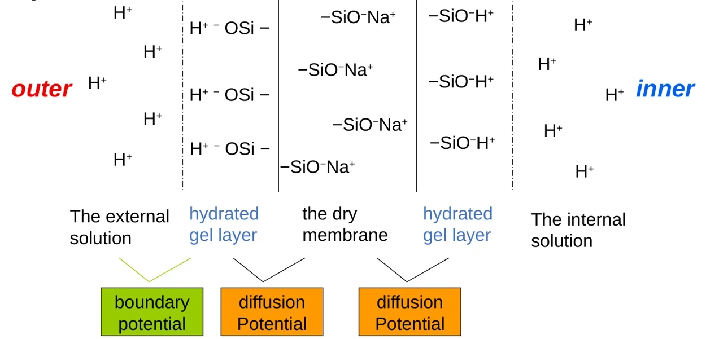
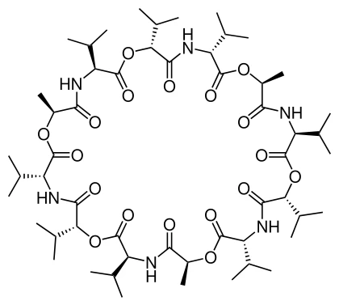

CHAPTER 11 · POTENTIOMETRY & ION-SELECTIVE ELECTRODES
电位法与离子选择性电极
依据完整课件逐页重写，保留原理、推导、适用条件与复算例题。
11.1 · CELL & EQUILIBRIUM
完整电池与零电流测量
电位法（potentiometry）测量指示电极与参比电极组成的完整电池的电动势。指示电极（indicator electrode）接触待测液，其电位由目标物种的活度决定；参比电极（reference electrode）提供不随待测物浓度改变的比较基准。电压表读出两个半电池的差值，单个电极的绝对电位无法独立测得。
仪器需要极高输入阻抗，使测量电流接近零。若电流明显流过，界面就会持续氧化还原，改变表面组成并产生极化，测得电位随之偏离原先的平衡值。“零电流”强调测量条件，电极界面的微观交换仍可在平衡时双向进行。
本章统一把指示电极写在右边，液接电位 Ej 也按同一方向定义。更换接线会反转读数符号，故正负不能脱离电池写法判断。以氢电极作左侧参比且规定其标准电位为零，右侧电极电位才直接等于相应标度上的电池读数。
读取平衡电位还要求界面能足够快地建立稳定响应。若电极对目标电对的电子交换非常慢，或存在多个电对共同控制的混合电位，就不能仅因电压表电流很小而认定读数必然等于某一个 Nernst 电位。膜电极也需先达到合适的离子交换状态；读数持续漂移时，应先排查电极、液接和样品变化，而不是立即代入平衡公式。
来源：11_Potentiometric Electrodes and Potentiometry.pptx，slide 2–4。
11.2 · ACTIVITY & IONIC STRENGTH
活度、离子强度与浓度校准
电极遵循 Nernst 方程，响应的是活度（activity）。离子间静电相互作用使真实溶液偏离理想状态，活度系数 γ 把这些相互作用对化学势的影响纳入计算。使用浓度标度时，应写成无量纲活度：
c° 为标准浓度，通常取 1 mol·L−1；I 为离子强度，二价离子的贡献按电荷平方加权。课件用“有效浓度”说明活度，这里补出标准态，避免把带单位浓度直接放入对数。稀溶液中 γ 可接近一，但判断依据是所有离子的共同影响，不能只看待测物很稀。
加入惰性盐可能降低稀溶液中离子的活度系数，使难溶盐在保持相同热力学溶度积时具有更大的浓度溶解度。该趋势不能无条件外推到任意高盐度。直接定量通常用大量背景电解质固定标准和样品的离子强度，把近似恒定的 γ 并入截距，建立 E 对 lg c 的校准线；金属络合或沉淀则还会改变游离离子比例。
计算补充：若标准中活度系数接近一，而样品中待测一价阳离子的活度系数为 0.80，同浓度时样品电位会低约 5.73 mV。若忽略该差异按标准线反算，会把浓度估低约百分之二十。这个例子说明几毫伏并非总是小误差，且固定离子强度的目的在于匹配活度系数，不是让所有溶液都变成理想溶液。
来源：11_Potentiometric Electrodes and Potentiometry.pptx，slide 5–6、22–23。
11.3 · METAL & METAL-SALT ELECTRODES
金属电极与金属—难溶盐电极
第一类电极由金属与其自身阳离子构成，如 Ag｜Ag+。对 Ag+＋e−⇌Ag，固体银活度为一，反应商为银离子活度的倒数，所以银离子越多，还原电位越正。推广到 Mn+＋ne−⇌M，十倍活度变化在 25 °C 下对应约 59.16n mV。
EAgCl=E°AgCl−RTF ln aCl⁻
第二类电极由金属、该金属的难溶盐及盐的阴离子构成，如 Ag｜AgCl(s)｜Cl−。半反应为 AgCl(s)＋e−⇌Ag(s)＋Cl−，因此氯离子活度升高会使电位降低。它也可从第一类电极推得：Ksp=aAg⁺aCl⁻，以 Ksp 替换银离子活度后，常数项改变，阴离子项出现负号。
例：Hg2Cl2 的标准电位为 0.268 V，Hg22+／Hg 为 0.789 V。把溶解平衡与两电子还原相加，得到 标准电位与溶度积之间的关系如下。汞(I)是 Hg22+，不能误按单个 Hg+ 取电子数。
第二类电极的标准电位已经包含相应难溶盐的热力学信息。因此利用两个标准电位反求溶度积时，应先写相同电子数的半反应并相减，不能把标准电位当作可直接随化学计量倍乘的能量。需要相加的是反应 Gibbs 能，电位通过 ΔG°=−nFE° 与之联系。纯固体活度取一也要求相应固相确实存在并处于所假定状态。
来源：11_Potentiometric Electrodes and Potentiometry.pptx，slide 3–10。
11.4 · REDOX & HYDROGEN ELECTRODES
惰性电极与氢电极
惰性氧化还原电极用 Pt 等导体接触同一电对的氧化态与还原态。金属提供电子交换界面，电位由溶液物种的活度比控制。对 Ox＋ne−⇌Red，氧化态比例升高使还原电位变正；若半反应包含质子，pH 也必须进入反应商。
EMn=E°Mn−RT5F ln aMn²⁺aMnO₄⁻aH⁺8
高锰酸根还原为 Mn2+ 时，半反应消耗八个 H+ 并转移五个电子，故仅凭两种锰物种浓度不足以确定电位。氢电极 Pt｜H2｜H+ 则把气体与溶液联系起来，严格应使用相对标准态的氢气逸度，低压下可近似为相对压力。
S=2.303RTF。标准氢电极的标准电位约定为零；可逆氢电极 RHE 随所在溶液的 pH 移动，不能把任意 pH 下的氢电极都当作相对标准氢电极的零点。
对数式中的电子数由配平反应决定，指数则由各物种的计量系数决定，二者作用不同。例如改变酸度会显著移动高锰酸根电位，即使氧化态与还原态的分析浓度比完全相同；若离子又发生络合，还需用真实游离活度，或在固定介质中采用适当条件电位。这也是惰性铂电极不能充当“通用金属总量计”的原因。
来源：11_Potentiometric Electrodes and Potentiometry.pptx，slide 11–12。
11.5 · CELLS WITH & WITHOUT JUNCTIONS
无液接电池与分隔参比的取舍
课件的无液接电池 Pt｜H2(g),HCl(aq)｜AgCl(s)｜Ag 让两个电极接触同一溶液，无需两种溶液的盐桥界面。氢电极发生氧化，银氯化银电极发生还原；总反应为 AgCl＋二分之一 H2⇌Ag＋H+＋Cl−。
它消除了液接电位，却使两侧电极都受同一 HCl 组成影响，不能把其中 Ag／AgCl 的电位视为与样品完全无关。因此常规分析把参比半电池放在独立、固定组成的内充液中，再用液接界面导通；测量方便，但要处理新增液接电位。
饱和甘汞电极 SCE 为 Hg｜Hg2Cl2｜饱和 KCl，课件取 25 °C 时相对氢电极＋0.242 V。“饱和”指 KCl 内充液。Ag／AgCl 也可作参比，其电位稳定依赖内部氯离子活度固定；同一结构作氯离子指示电极时，外液氯离子反而就是变量。报告结果需注明参比、内充液浓度和温度。
无液接电池中电位含有氢离子与氯离子的活度乘积，可用于研究电解质的平均活度行为。常规分隔参比则牺牲了这种完全消除液接的结构，换取一侧电位可固定的便利。比较两种电池时，应从测量目标出发：精密热力学测量重视对液接项的控制，日常浓度测量更依赖可重复参比和与样品相容的校准。
来源：11_Potentiometric Electrodes and Potentiometry.pptx，slide 13–16。
11.6 · LIQUID-JUNCTION POTENTIAL
液接电位的成因与盐桥选择
多孔烧结玻璃界面阻止明显整体混合，却允许离子扩散导电。当两侧浓度或组成不同，各离子扩散速度不等，便产生微小电荷分离与电场，形成液接电位。它可正可负，符号取决于界面方向及迁移率。
课件举 0.1 M HCl｜0.01 M HCl：H+ 向稀侧扩散远快于 Cl−，稀侧带相对正电，液接电位可达数十毫伏。换成同浓度比 KCl，K+ 与 Cl− 迁移率接近，电位只约毫伏。两侧最终组成相同，维持该浓差电位的驱动力也随之消失。
高浓度 KCl 盐桥兼具两个作用：离子迁移率相近，且桥液离子通量占优，使不同样品引起的液接变化减小。Ej 仍可能随样品 pH 和组成改变，校准只能吸收近似恒定的部分。测 Ag+ 时还需防止氯离子泄漏导致沉淀，可选择合适的双液接结构或其他桥液。盐桥选择必须兼顾迁移率、化学相容性与污染。
校准标准与样品的酸度相差过大时，H+ 或 OH− 的高迁移率可能使液接项不再保持常数。此时只把参比标称电位从读数中减掉，仍不能消除误差。要检查的是整套参比系统，包括液接孔是否堵塞、内充液是否保持指定组成，以及测量前后读数是否能回到标准值。
来源：11_Potentiometric Electrodes and Potentiometry.pptx，slide 17–21。
11.7 · GLASS MEMBRANE MECHANISM
玻璃膜的结构与电位来源
玻璃 pH 电极以薄玻璃膜分隔内充液和样品，内部 Ag／AgCl 电极把膜内侧电位接到仪器，外参比完成电池。复合电极将测量半电池和参比半电池封装在同一探头，内部仍有不同功能区。玻璃电极响应快、适用 pH 范围宽，并且一般不直接受样品氧化还原剂控制。
新玻璃表面有与 Na+ 结合的硅酸盐位点，浸泡后形成水合凝胶层，发生 −SiO−Na+＋H+⇌−SiOH＋Na+。内外两侧水合层分别与相邻溶液交换离子，形成边界电位（boundary potential）；玻璃内部的离子迁移则维持电荷传导。
课件还区分凝胶层与干玻璃层之间由不同离子迁移产生的扩散电位。正常条件下，随外液 pH 改变的主要项来自边界电位。内液活度固定后，内侧界面及两参比电位等可并入截距。两面玻璃结构不完全相同还可产生不对称电位，因此即使理论斜率已知，仍需校准零点。

玻璃膜传导与水合界面的交换属于离子过程。内部 Ag／AgCl 电极才把离子平衡与金属导线中的电子联系起来，外参比也承担同类电接触功能。把玻璃理解为“质子自由穿透到另一侧”，会忽略干玻璃与凝胶的分工；把膜理解为金属导体，则无法解释预浸泡、水合程度和膜组成为什么直接影响响应。
来源：11_Potentiometric Electrodes and Potentiometry.pptx，slide 24–30。
11.8 · pH CALIBRATION & TEMPERATURE
pH 校准、例题与温度效应
25 °C 时 S≈59.16 mV，pH 上升一单位，按本章接线电位下降约 59 mV。单点校准在已知斜率时确定截距；双点校准可同时确定实际斜率和截距，标准缓冲液宜覆盖样品范围。电极先充分水合，冲洗并去除附着液后读取稳定值，以减小交叉污染和响应迟滞。
课件例：pH 4.01 标准液读数为 0.814 V，乙酸溶液按题给 pH 3.88 计算。ΔE=−0.05916×(3.88−4.01)=＋0.00769 V，得到约 0.822 V。较低 pH 对应较高读数，可作为符号自检。
温度一方面改变 S，37 °C 时约 61.5 mV；另一方面改变缓冲液及样品本身的酸碱平衡。自动温度补偿主要修正电极斜率，不能把任意样品的真实 pH 换算到另一温度。课件以血液说明：在测量温度校准，并防止 CO2 逸失或吸收改变碳酸体系平衡；污染膜层还会造成漂移和迟缓。具体清洗应按电极材质采用相容方案。
由两点标准还可检查电极是否接近预期斜率。若稳定标准间的电位差显著小于理论值，可能存在膜响应不足、老化、污染或温度设定错误；若读数来回波动，则需排查液接、混匀和电接触。两点拟合能给出一条直线，但不能证明样品已处于相同的响应条件，测量后回测标准是识别漂移的有效办法。
来源：11_Potentiometric Electrodes and Potentiometry.pptx，slide 30–33。
11.9 · ION-SELECTIVE MEMBRANES
离子选择性膜的四种实现
离子选择性电极 ISE（ion-selective electrode）借助膜中优先交换、结合或迁移来响应某种离子。选择性玻璃膜通过改变玻璃组成降低对质子的偏好，提高对某些单价阳离子的响应，内部填充相应离子的盐溶液。
固态氟电极采用掺 EuF2 的 LaF3 单晶膜，掺杂提高晶体离子电导。课件给出约 10−5 M 以上的 Nernst 响应区，向 10−6 M 延伸时出现非理想响应。低 pH 使 F− 转为 HF，高 pH 的 OH− 干扰，因此需控制适用 pH，课件示意约 4–9。
液膜电极把与水不混溶的有机离子交换剂固定在多孔支撑上。钙电极可使用有机磷交换剂，内液含 Ca2+ 及供内参比工作的卤离子；交换剂溶失会影响使用稳定性。塑料膜电极则将亲脂性离子载体（ionophore）、增塑组分等溶入 PVC 膜，挥发 THF 后成膜，亲脂性有助于减少载体进入水相。
缬氨霉素的含氧配位腔适配 K+，课件给其对钾相对钠约万倍的选择性。冠醚也以内部氧原子配位、外部疏水基团留膜，14-crown-4 可用于锂识别。空腔尺寸、配位构型与脱溶剂化共同决定响应，不能仅凭“孔洞能装下”判断。

来源：11_Potentiometric Electrodes and Potentiometry.pptx，slide 34–41。
11.10 · SELECTIVITY COEFFICIENT
选择性系数与混合离子响应
理想单离子响应为 E=k＋Szlg a，z 取带符号电荷。故一价阳离子活度增加时电位上升，一价阴离子则下降，二价离子每十倍活度变化的理想斜率绝对值减半。膜具有选择性，同时仍可能响应同号干扰离子。
Nikolsky–Eisenman 型方程中，A 为主离子，B 为干扰离子。K 越小表示相对干扰越弱，但判断实际偏差必须比较整个干扰项与 aA。Na+ 电极中 Ca2+ 项为 K·aCa²⁺½。若同价干扰项达到主离子的百分之一，按忽略干扰反算所得的表观活度就约高出百分之一。
课件第 43–44 页负号与第 42 页带符号 z 的定义不一致，本章统一采用上式。选择性系数须连同测定方法和条件理解，不能把异价体系任意两个系数简单当成倒数。较小 K 也不等于较低检测限，后者还受背景、膜成分释放及低活度时的非理想响应影响。
测选择性系数时，可固定干扰离子活度并改变主离子，观察混合响应何时明显偏离单离子直线。分开测两种纯离子溶液也可估计相对响应，但数值依赖测定约定。实际样品中若主离子极低而干扰离子固定，电位会逐渐由干扰项主导，校准曲线在低浓度端趋平，此时继续外推理想斜率会给出缺乏依据的浓度。
来源：11_Potentiometric Electrodes and Potentiometry.pptx，slide 42–44。
11.11 · FLUORIDE QUANTIFICATION
氟电极定量与整章解题顺序
TISAB 为总离子强度调节缓冲液，用于匹配离子强度、控制 pH，并依配方减小部分金属络合干扰。标准与未知样品必须按同样比例加入，使可测游离氟与标称总氟之间具有一致关系。
题给稀释前标准为 1.00×10−3 和 4.00×10−3 mol·L−1，电位分别 −211.3、−238.6 mV；未知为 −226.5 mV。相同十倍稀释只改变截距，可以直接以稀释前浓度建立校准：
cx=c1×10Ex−E1b=2.16×10−3 mol·L−1
使用实测斜率，不能强行换成理想 −59.16 mV；此路线结果已是原样浓度。若先用稀释后标准计算，则最后再还原稀释倍数。解题依次写半反应与电池方向，确定响应活度及斜率符号，判断离子强度和形态处理，再用校准反算。电位法尤其需要区分游离离子、总浓度与活度。
对数校准意味着等电位误差对应近似相同相对浓度误差，而非相同绝对浓度误差。按本题斜率，约 1 mV 的读数变化就可带来约百分之五的浓度变化。应避免只报告过多小数位，却忽略标准液制备、TISAB 比例、稳定时间与基体差异；结果的有效数字要与实际校准质量一致。
来源：11_Potentiometric Electrodes and Potentiometry.pptx，slide 22–23、45–46。